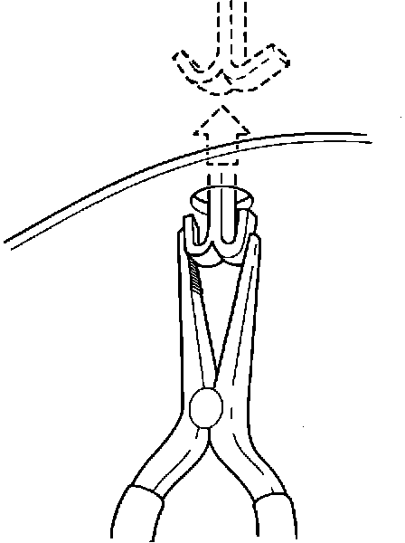
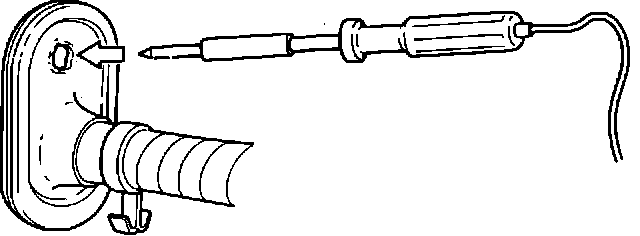
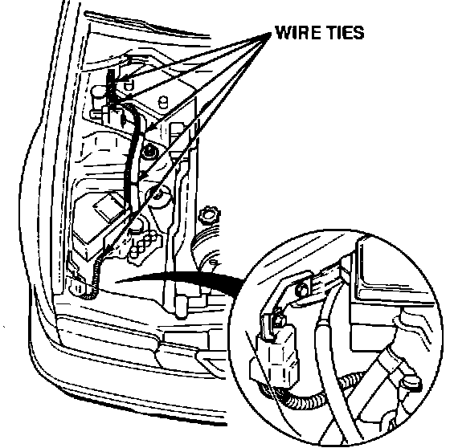
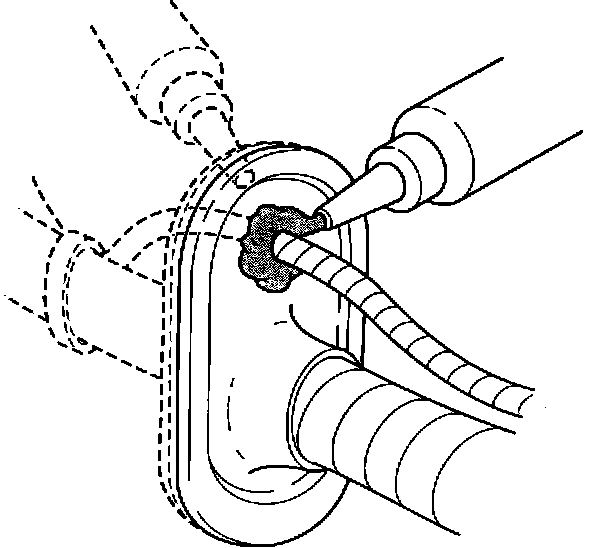
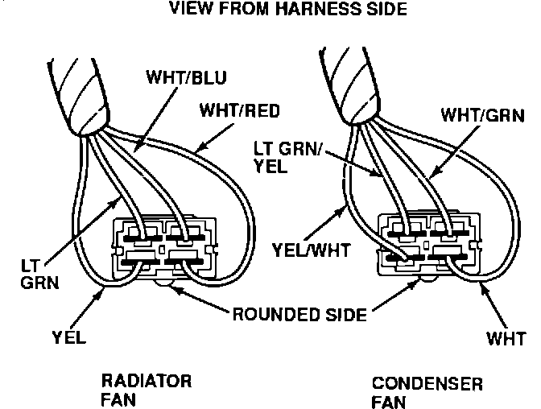
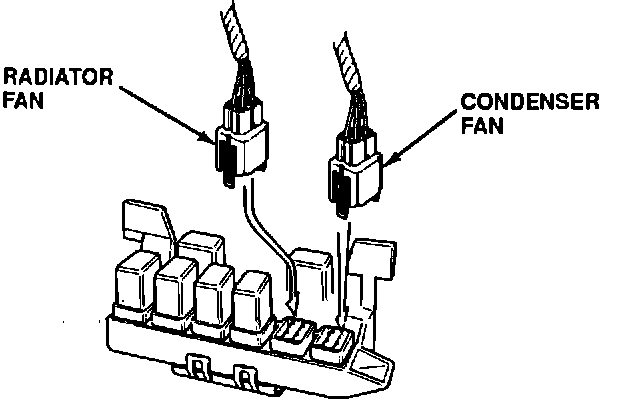

Glove Box Area - Clicking Noise with A/C Off
September 29, 1992BULLETIN NO.
92-028
YEAR
1992
MODEL
VIGOR
VIN APPLICATION
ALL
Clicking Noise From Glove Box Area
SYMPTOM
A fairly frequent clicking noise is heard from the area of the glove box when driving with the air conditioning off.
PROBABLE CAUSE
The radiator and condenser fan control relays are located behind the glove box. When they cycle the fans on and off, their operation is audible in the interior.
CORRECTIVE ACTION
Install the sub-harness listed under PARTS INFORMATION to move the fan control relays out of the passenger compartment.
1. Get the audio system anti-theft code and record the radio preset button frequencies.
2. Remove the glove box.
3. Remove the battery.
4. Remove the right front mud flap. Loosen the rear half of the plastic inner fender well liner.

5. Locate the main wire harness mounting clip behind the fender well liner. Squeeze the clip with a pair of pliers and push it into the engine compartment.
6. Carefully pry the main wire harness grommet out of the bulkhead from the engine compartment side.

7. Use a soldering iron with a 5 mm tip to melt a hole in the grommet.
8. Remove the under-hood fuse relay box's front mounting bolt. Install the relay mounting bracket that came with the sub-harness assembly. Reinstall and tighten the mounting bolt.
9. Install the relays in the sub-harness connector. Route the sub-harness between the under-hood fuse/relay box and the ABS modulator. Use the supplied bolt to mount the relays to the bracket installed in the previous step.
10. Feed the other end of the sub-harness through the new hole in the grommet.

11. Starting at the relay end, wire-tie the sub-harness to the main harness as shown. Work the slack in the sub-harness toward the grommet end before tightening each wire tie.

12. Seal the sub-harness to the grommet with Three Bond 1212 silicone adhesive. Run a bead around the sub-harness on both sides of the grommet.

13. Insert the sub-harness wire pins into the connectors. Make sure the pins are in the proper locations in each connector or you will damage the ECU, fans, or coolant switch. Pull on each wire to make sure the pin is locked in the connector.
14. Install the grommet in the bulkhead. Make sure the silicone adhesive still forms a good seal around the sub-harness.

15. Remove the radiator and condenser fan relays from the under-dash relay box (service manual page 23-13). Connect the sub-harness connectors in place of the removed relays. Make sure they are locked in place.
16. Install the main wire harness mounting clip, the inner fender well liner, and the mud flap.
17. Install the glove box.
18. Install the battery. Enter the anti-theft code in the radio and set the preset buttons to the frequencies you recorded.
PARTS INFORMATION
Fan relay
sub-harness assembly 06320-SL5-305
Three Bond 1212
silicone adhesive TB-1212
WARRANTY CLAIM INFORMATION
In warranty:
The normal warranty applies.
Out of warranty:
Any repair performed after warranty expiration may be eligible for goodwill consideration by the District Service Manager. You must request consideration, and get the DSM's decision, before starting work.
Operation number: 723115
Flat rate time: 0.8 hour
Failed P/N: 06320-SL5-305
Defect code: 042
Contention code: B07